Angular и React · инструкция для студентов
30.10.2026
Репозиторий курса:
от создания до сдачи работ
В инструкции разобрано, как создать репозиторий для работ по дисциплине, как подготовить к работе компьютер колледжа и свой компьютер, как сдать работу, как узнать, что GitHub её принял, и как получить новые материалы. У каждого шага есть кадр экрана, команда или схема.
- Для кого
- Студенты дисциплины «Angular и React»
- Что понадобится
- Аккаунт GitHub, VS Code, Git и Node.js
- Что получится
- Свой репозиторий
react-kurs: в нём доска заявок по главам, автоматизация и проекты модулей - Сколько занимает
- Первый раз около 20 минут, дальше 2–3 минуты в начале пары
§1Три копии: шаблон, репозиторий, папка
Порядок работы похож на сдачу письменных работ. У преподавателя лежит методичка с бланками заданий. Каждый студент получает свою папку для работ и складывает в неё заполненные бланки. Черновики он пишет за партой, а в папку кладёт готовое.
Репозиторий — это папка проекта вместе с историей всех сохранённых изменений. С репозиторием порядок тот же, только копий три. Шаблон курса ведёт преподаватель: в нём конспекты глав, задания проектов и правила сдачи. Ваш репозиторий — копия шаблона на GitHub, в неё сдаются работы. Папка на компьютере — копия вашего репозитория, в ней вы пишете и запускаете код.
На схеме — три копии и действия, которые их связывают:
Из схемы следуют два правила. Работа сдана, когда она есть в вашем репозитории на GitHub: папку на компьютере преподаватель не видит. Новые материалы приходят сначала на GitHub, на компьютере они появляются после Sync Changes.
Папка на компьютере — это та самая папка курса react-kurs из главы 1.1 справочника. Пустую папку создавать не нужно: её даёт клонирование репозитория (§5), а доска zayavki и папка avtomatizaciya появляются в ней по шагам глав.
Зачем это нужно в работе
- Код команды. В компании проект лежит в общем репозитории. Каждый разработчик работает в своей копии на компьютере и отправляет туда изменения.
- Портфолио. Открытый репозиторий с работами курса можно показать работодателю: по истории видно, что и когда сделано.
- Работа с разных компьютеров. На паре и дома — две копии одного репозитория. Флешка не нужна: изменения переходят через GitHub.
Первая копия уже есть: шаблон курса создан преподавателем. Чтобы получить вторую, нужен аккаунт на GitHub.
§2Аккаунт GitHub и почта для коммитов
Если аккаунт на GitHub уже есть, переходите к шагу 2.
Шаг 1. Зарегистрироваться
Откройте github.com/signup. Введите почту, пароль и имя пользователя — логин. Подтвердите почту кодом из письма.
Логин входит в адрес каждого вашего репозитория. Его увидят преподаватель и работодатель, поэтому логин составляют из имени и фамилии латиницей:
Шаг 2. Скопировать служебную почту
Каждое сохранение в Git — коммит — подписано именем и почтой автора. Это похоже на обратный адрес на конверте: по нему GitHub находит ваш профиль. Репозиторий открытый, подпись видна всем. Поэтому для коммитов GitHub выдаёт служебный адрес: он ведёт на ваш профиль и скрывает настоящую почту.
- Нажмите на аватар справа вверху. В меню выберите Settings.
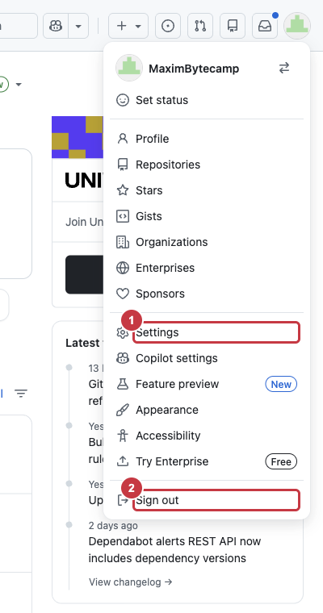
- В настройках слева выберите Emails и прокрутите страницу до блока Keep my email addresses private.
- Нажмите переключатель справа от заголовка блока: надпись Off сменится на On.
- В тексте блока написан адрес вида
12345678+ivan-petrov@users.noreply.github.com. Скопируйте его в заметки: он понадобится при настройке Git на компьютере.
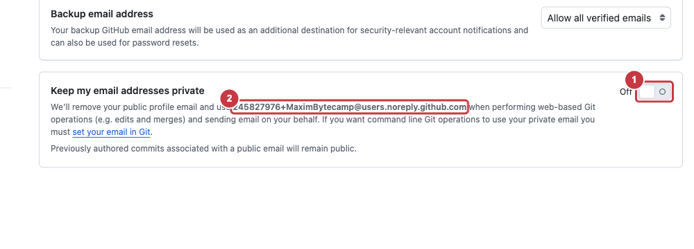
Ниже на той же странице есть пункт Block command line pushes that expose my email. Если он включён, GitHub отклоняет отправку коммитов с настоящей почтой: Sync заканчивается ошибкой GH007. Коммиты с почтой, которая не привязана к аккаунту, не появляются на графике активности в профиле.
Что получилось.Есть аккаунт с понятным логином и служебная почта для коммитов.
Аккаунт готов. Следующий шаг — создать в нём копию шаблона курса.
§3Копия шаблона: Use this template
На странице шаблона есть две кнопки для копирования: Use this template и Fork. Результат у них разный.
Fork · копия с привязкой
Копия, привязанная к оригиналу.
- Под именем надпись
forked from - Коммиты не попадают в график активности профиля
- Перенос новых материалов не работает
Use this template · копия для курса
Самостоятельный репозиторий с копией всех файлов.
- Под именем надпись
generated from - Коммиты попадают в график активности
- Новые материалы приходят каждый день
Шаг 1. Открыть шаблон
Откройте github.com/MaximBytecamp/react-kurs-template. Справа над списком файлов нажмите Use this template → Create a new repository.
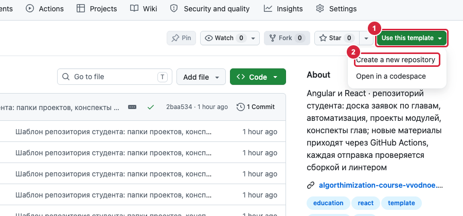
Шаг 2. Заполнить форму
Откроется форма нового репозитория. Номера на кадре совпадают с номерами в таблице.
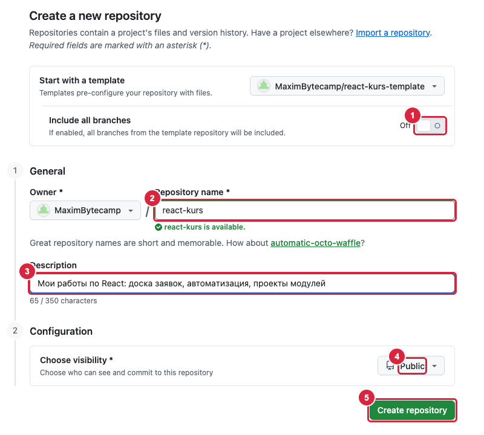
MaximBytecamp/react-kurs-template, в поле Owner — ваш логин. Под именем зелёная надпись is available: имя свободно.| № | Поле | Что указать |
|---|---|---|
| 1 | Include all branches | оставить в положении Off |
| 2 | Repository name | react-kurs |
| 3 | Description | Мои работы по React: доска заявок, автоматизация, проекты модулей |
| 4 | Choose visibility | Public: репозиторий открывают преподаватель и работодатель |
| 5 | Create repository | нажать, когда поля 1–4 заполнены |
Нажмите Create repository. GitHub откроет страницу нового репозитория.
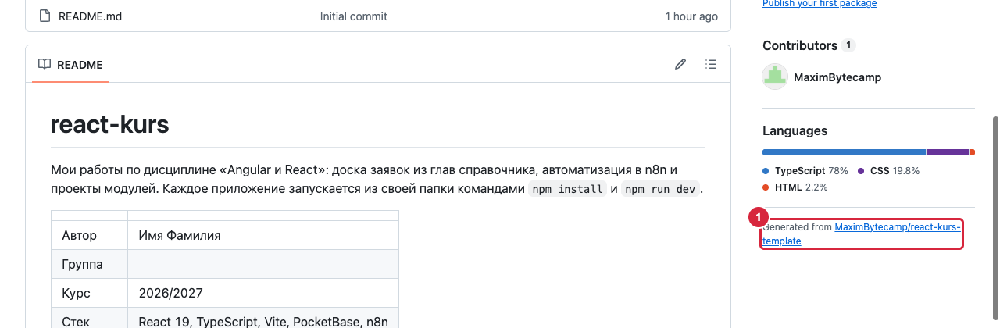
Что получилось.Под именем репозитория написано generated from MaximBytecamp/react-kurs-template. Если там forked from или надписи нет, удалите репозиторий (Settings → внизу Delete this repository) и создайте заново.
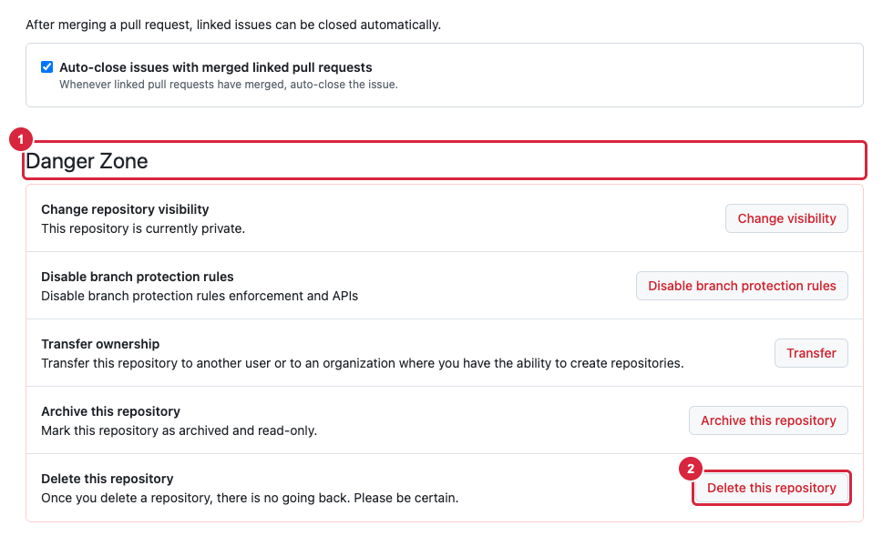
В репозитории лежат файлы шаблона. Первым гость репозитория видит файл README.md, его заполняют следующим.
§4Визитка репозитория
Корень репозитория — его верхний уровень, где лежат папки projects, lectures, docs и другие. Файл README.md из корня GitHub показывает под списком файлов на странице репозитория. Он работает как обложка папки с работами: по нему понятно, чьи работы и что внутри. Этот файл ваш, перенос материалов от преподавателя его не меняет.
Шаг 1. Вписать себя
В списке файлов репозитория нажмите README.md. Справа над текстом файла нажмите значок карандаша.
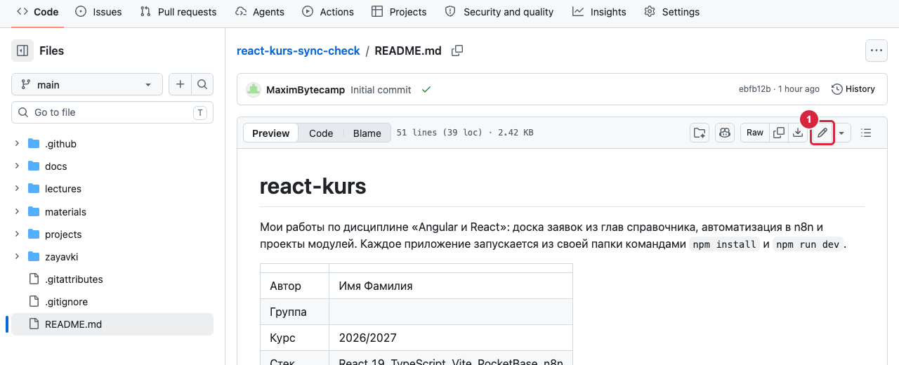
Замените Имя Фамилия на свои, впишите группу. Справа вверху нажмите Commit changes…. Откроется окно коммита:
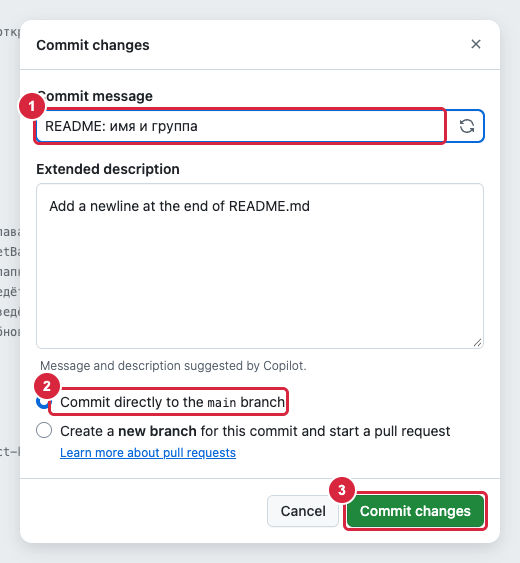
Шаг 2. Добавить темы
Справа на странице репозитория найдите блок About и нажмите шестерёнку.
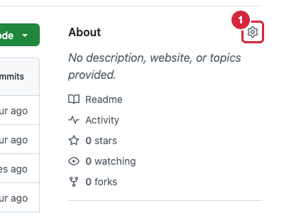
В окне Edit repository details в поле Topics введите react, typescript, learning. После каждого слова нажимайте пробел. Затем нажмите Save changes. По темам репозиторий находится в поиске GitHub.
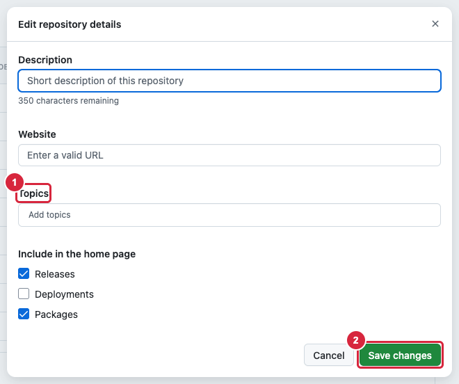
Шаг 3. Отправить ссылку преподавателю
Скопируйте адрес из строки браузера: https://github.com/ваш-логин/react-kurs.
Разделы визитки:
README.md в корне вашего репозитория
npm install и npm run devПочему разделы такие — на странице стандарта репозитория.
Что получилось.Репозиторий подписан вашим именем, у преподавателя есть его адрес.
Репозиторий на GitHub готов. Дальше его копию нужно получить на компьютер, за которым вы работаете.
§5Начало пары за компьютером колледжа
Компьютер в аудитории похож на общий телефон. Если прошлый хозяин не вышел из мессенджера, ваше сообщение уйдёт от его имени. На компьютере колледжа до вас работали другие студенты. Их вход в GitHub мог остаться в четырёх местах:
Где остаётся вход прошлого студента
Пока там чужой вход, ваши коммиты уйдут с чужой подписью или GitHub не примет отправку. Проверка занимает пару минут и выполняется в начале каждой пары.
Шаг 1. Браузер: войти в свой GitHub
Откройте github.com. Если справа вверху чужой аватар, нажмите на него → Sign out, как на кадре меню аватара в §2. Откроется страница подтверждения:
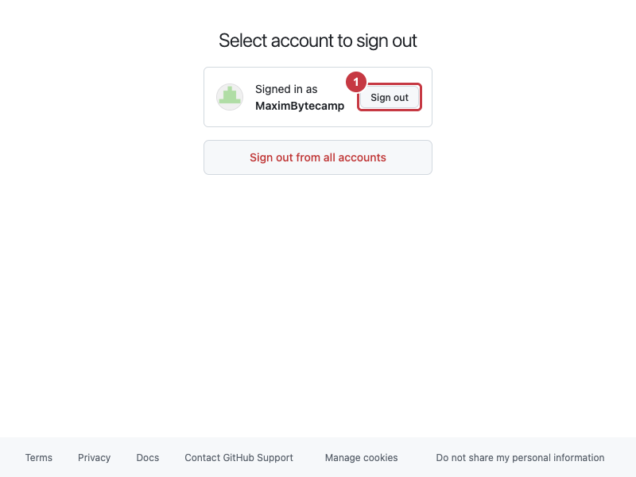
После выхода нажмите Sign in справа вверху и войдите в свой аккаунт.
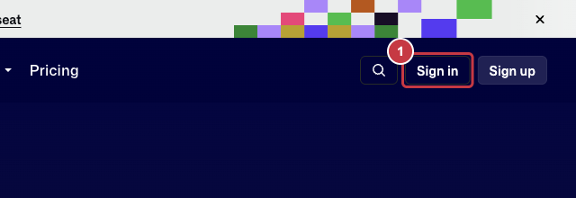
Шаг 2. VS Code: выйти из чужого аккаунта
Внизу левой полосы VS Code — значок человечка. Если в меню чужое имя, наведите на него и нажмите Sign Out.

Шаг 3. Удалить сохранённый вход Git
Git хранит вход в GitHub отдельно от VS Code — в хранилище паролей системы. После выхода из VS Code запись прошлого студента остаётся там. Её удаляют вручную.
Управление учетными данными
Учетные данные Windows Добавить учетные данные Windows
Нет учетных данных Windows.
Общие учетные данные 2 Добавить общие учетные данные
- Нажмите Пуск, наберите Диспетчер учетных данных и откройте его.
- Выберите вкладку Учетные данные Windows.
- В разделе Общие учетные данные найдите записи со словом
github, напримерgit:https://github.com. - Раскройте каждую стрелкой → Удалить → Да.
То же одной командой в терминале VS Code:
cmdkey /delete:git:https://github.com
- Нажмите Cmd + Пробел, наберите Связка ключей и откройте программу.
- В поле поиска справа вверху введите
github.com. - Каждую найденную запись удалите: правая кнопка мыши → Удалить.
- Откройте программу Пароли и ключи (Seahorse).
- В поиске введите
github.com. - Каждую найденную запись удалите: правая кнопка мыши → Удалить.
Если записей со словом github нет, шаг пропускается.
Шаг 4. Склонировать свой репозиторий
Клонирование — скачивание репозитория на компьютер вместе с историей. Откройте панель Source Control: CtrlCmd + Shift + G. Нажмите Clone Repository, затем Clone from GitHub.
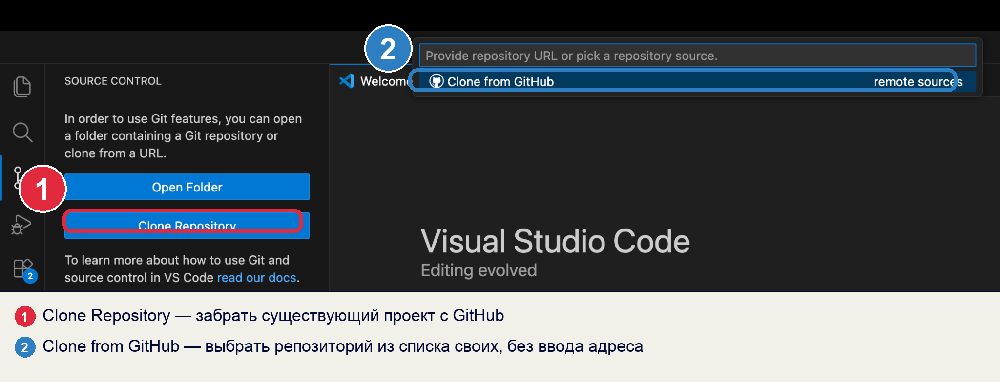
VS Code попросит разрешение на вход: нажмите Allow. Окно появляется, если VS Code ещё не вошёл в GitHub.
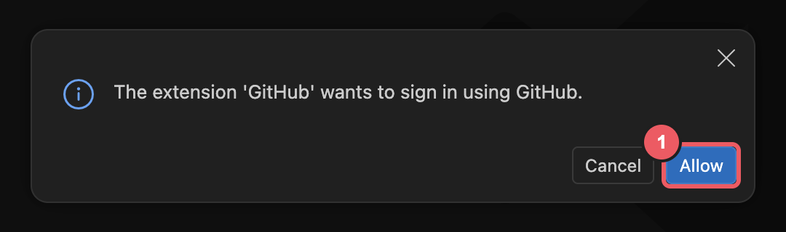
Откроется браузер. Нажмите в нём Continue или Authorize Visual-Studio-Code и вернитесь в VS Code. Если браузер предлагает войти от чужого имени, вернитесь к шагу 1.
В списке выберите ваш-логин/react-kurs. Папку для копии выберите в Документах: там проект лежит отдельно от скачанных файлов, и на следующей паре его легко найти. Когда загрузка закончится, VS Code спросит, что делать с проектом:

Шаг 5. Указать Git своё имя и почту
Настройки Git хранятся на уровнях. Уровень папки проекта (local) действует только в этой папке. Уровень учётной записи компьютера (global) действует во всех папках. Если имя задано на обоих уровнях, Git берёт имя из папки проекта.
react-kurs получат вашу подпись, даже если на компьютере осталось имя прошлого студента.Поэтому на общем компьютере имя и почту задают без ключа --global. Откройте терминал: меню Terminal → New Terminal. Он откроется сразу в папке репозитория. Выполните три команды, подставив своё имя и служебную почту из §2:
git config user.name "Иван Петров" git config user.email "12345678+ivan-petrov@users.noreply.github.com" git config pull.rebase false
Первые две команды задают подпись коммитов. Третья задаёт способ объединения. Если на GitHub появились новые коммиты, а у вас свои, Git создаст ещё один коммит, который объединяет обе версии. Такой коммит называется коммитом слияния. Без этой настройки Sync Changes в такой ситуации заканчивается ошибкой.
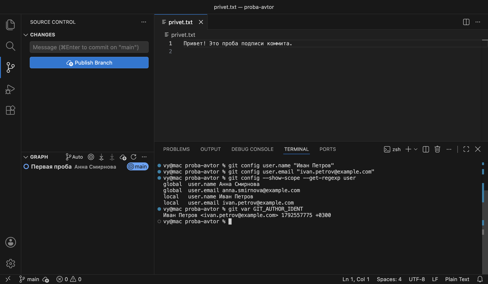
git config --show-scope --get-regexp user: на уровне global осталась Анна Смирнова, на уровне local — Иван Петров. Последняя строка — подпись, которую получит коммит.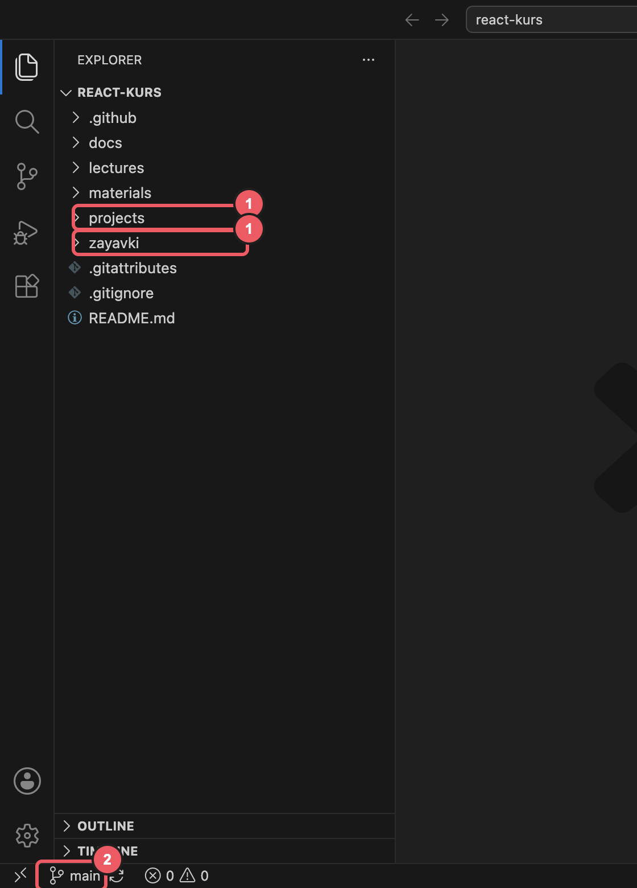
main в строке состояния внизу слева.Проверка перед работой
projects, lectures, docs, а после главы 1.1 — zayavki.git config user.email печатает вашу почтуСлужебную, из §2.Если папка осталась с прошлой пары
Шаги 1–3 выполняются всё равно: после вас за компьютером мог работать другой студент. Вместо шага 4 откройте папку через File → Open Folder, затем панель Source Control и нажмите Sync Changes:
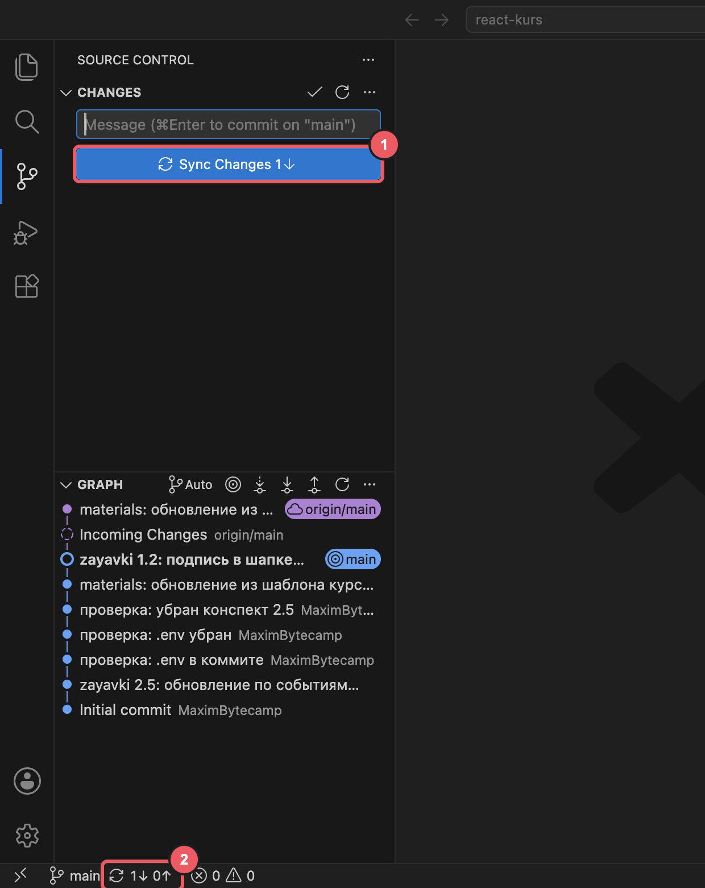
Если сомневаетесь, чья это папка, склонируйте репозиторий заново по шагу 4: всё сданное хранится на GitHub.
Что получилось.На компьютере открыта ваша копия репозитория, коммиты подписываются вашим именем.
Дома подготовка короче: компьютер ваш, и чужих входов на нём нет.
§6Свой компьютер дома
На своём компьютере настройка делается один раз. Node.js и VS Code устанавливаются по главе 1.1 справочника по Angular и React. Отличия от компьютера колледжа сведены в таблицу:
| Что | Компьютер колледжа | Свой компьютер |
|---|---|---|
| Проверка чужих входов | в начале каждой пары | не нужна |
| Клонирование | на каждой паре, если папки с прошлой пары нет | один раз |
| Имя и почта для Git | git config без --global, в папке проекта | git config --global, один раз |
| В конце работы | выход из всех аккаунтов | Commit и Sync Changes |
Шаг 1. Установить Git
Откройте git-scm.com/downloads/win и нажмите Click here to download. Запустите скачанный файл. На всех экранах установщика нажимайте Next, в конце — Install и Finish. После установки перезапустите VS Code.
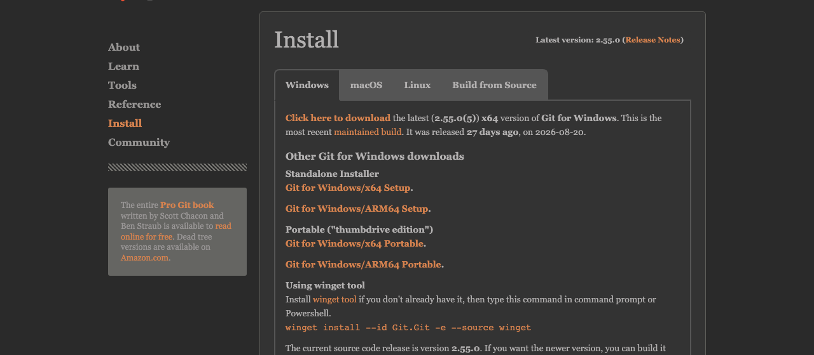
Откройте терминал и выполните git --version. Если Git не установлен, система предложит поставить инструменты разработчика: нажмите Установить. То же окно открывает команда xcode-select --install — это способ Xcode Command Line Tools со страницы git-scm.com.
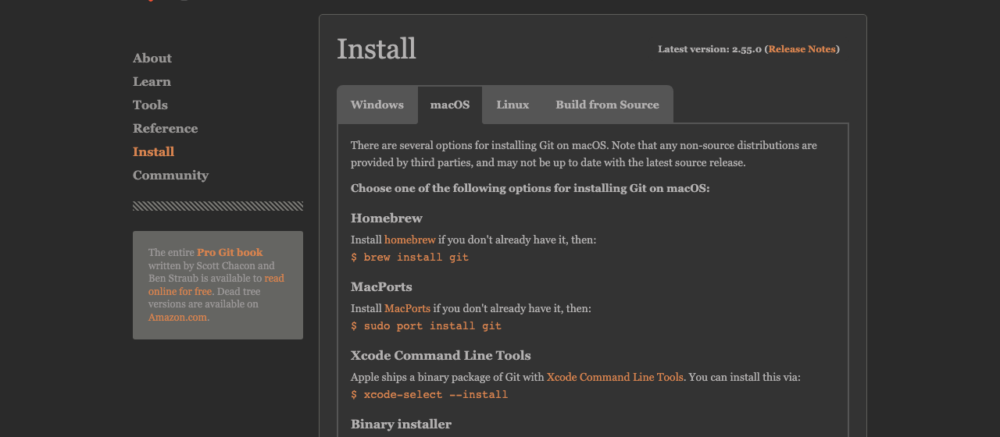
xcode-select --install.Установите Git из менеджера пакетов: sudo apt install git в Ubuntu и Debian.
Шаг 2. Указать Git имя и почту для всего компьютера
Компьютер ваш, поэтому настройка ставится на уровне global и действует во всех папках:
git config --global user.name "Иван Петров" git config --global user.email "12345678+ivan-petrov@users.noreply.github.com" git config --global pull.rebase false
Шаг 3. Склонировать репозиторий
Так же, как в шаге 4 §5: Clone Repository → Clone from GitHub → react-kurs → папка в Документах → Open.
Шаг 4. Перед каждой работой: Sync Changes
VS Code при запуске открывает последнюю папку. Откройте панель Source Control и нажмите Sync Changes, чтобы забрать новое с GitHub:
Что получилось.Копия репозитория лежит на вашем компьютере, новое с GitHub забрано.
Компьютер подготовлен. Теперь о том, куда класть работы, чтобы преподаватель находил их по одному пути у всех студентов.
§7Куда класть работу и как называть файлы
Репозиторий устроен как скоросшиватель с разделителями. Для каждого вида работ своё место, и оно одинаковое у всех студентов: преподаватель открывает один и тот же путь в каждом репозитории. Работы лежат в трёх местах — zayavki, avtomatizaciya и projects.
Папки репозитория react-kurs
npm create viteПодсвечены папки, в которые вы кладёте работы. Остальное обновляет преподаватель.
Где лежит каждый вид работы:
| Работа | Папка | Пример пути |
|---|---|---|
| доска по главам справочника | zayavki/ | zayavki/src/App.tsx |
| автоматизация | avtomatizaciya/ | avtomatizaciya/compose.yaml |
| проект модуля | projects/pN-вариант/ | projects/p1-obshchezhitie/src/App.tsx |
| журнал работы с ИИ | папка проекта | projects/p1-obshchezhitie/ai-log.md |
| процессы n8n проекта 2 | projects/p2-вариант/n8n/ | projects/p2-obshchezhitie/n8n/ii-dispetcher.json |
Имя папки проекта — номер модуля и вариант латиницей. Его берут из таблицы в projects/README.md: преподаватель дописывает туда строку, когда выдаёт проект. Имена подчиняются правилам:
| Правило | Так | Не так |
|---|---|---|
| латиница, без пробелов | p1-obshchezhitie | п1 общежитие |
папка — маленькие буквы, слова через - | p2-studsovet | P2_Studsovet |
| компонент React — с большой буквы, как в главах | RequestCard.tsx | requestCard.tsx |
| остальные файлы кода — с маленькой | api.ts, useRequests.ts | Api.ts |
| имя называет содержимое | ai-log.md | new.md, final2.md |
Три вещи в репозиторий не попадают, даже если лежат в этих папках. Папки node_modules и dist восстанавливаются командами npm install и npm run build и весят сотни мегабайт. Файл .env с токеном бота — секрет: открытый репозиторий видят все. Все три записаны в файле .gitignore шаблона, поэтому Git их не замечает, и делать ничего не нужно.
Место и имя известны. Дальше работу нужно проверить, сохранить коммитом и отправить на GitHub.
§8Сдать работу из VS Code
Порядок одинаковый для доски по главам, автоматизации и проектов. Все работы загружаются в ветку main.
Путь работы от папки до GitHub
Шаг 1. Забрать новое с GitHub
Откройте панель Source Control: CtrlCmd + Shift + G. Нажмите Sync Changes. На компьютер придут новые материалы и правки, сделанные через сайт.
Шаг 2. Новый проект: копия доски
Доска по главам растёт в папке zayavki, для неё этот шаг не нужен. Проект модуля начинается с копии доски: так написано на странице каждого проекта. Откройте терминал (Terminal → New Terminal) — он откроется в папке react-kurs — и скопируйте zayavki в папку проекта под именем из таблицы:
Copy-Item zayavki projects/p1-obshchezhitie -Recursecp -R zayavki projects/p1-obshchezhitie
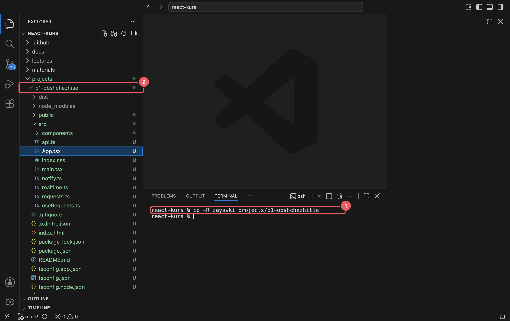
projects. Буква U у файлов — «новый, ещё не в истории». Папки node_modules и dist скопировались тоже, но Git их не отправит (§7).Дальше проект меняется по шагам его страницы. Запускается он так же, как доска: cd projects/p1-obshchezhitie и npm run dev.
Шаг 3. Проверить сборку и линтер
Перед коммитом выполните в папке работы две команды. npm run build проверяет типы TypeScript и собирает приложение. npm run lint запускает линтер oxlint: если ошибок и предупреждений нет, он ничего не печатает.
cd zayavki npm run build npm run lint
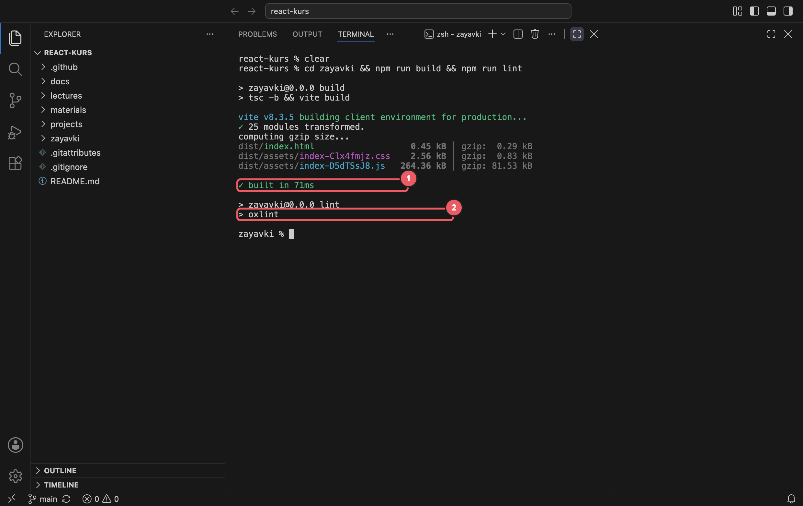
Те же команды GitHub выполнит после отправки (шаг 6). Если они падают у вас, на GitHub будет красный крестик.
Шаг 4. Сделать коммит
Откройте Source Control. В поле Message напишите, что сдаёте. Первое слово — папка или проект, затем глава или что сделано.
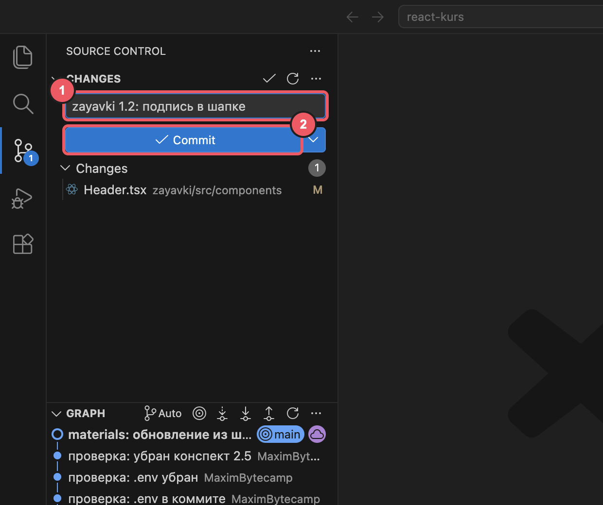
| Работа | Сообщение коммита |
|---|---|
| доска по главе 1.5 | zayavki 1.5: список, ключи, фильтр |
| исправление доски | zayavki 2.3: ошибка загрузки при остановленном PocketBase |
| проект | p1 obshchezhitie: форма и категории |
| журнал ИИ | p1 obshchezhitie: журнал работы с ИИ |
| автоматизация | avtomatizaciya: процесс «ИИ-диспетчер» |
Нажмите Commit. VS Code может спросить There are no staged changes to commit. Would you like to stage all your changes…? Нажмите Yes: в коммит войдут все изменённые файлы.
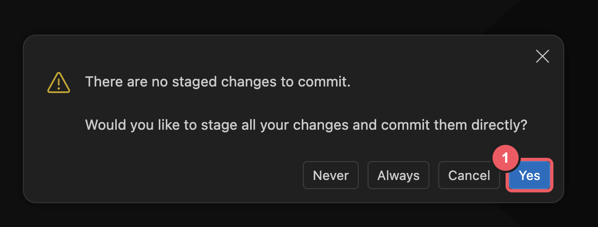
Шаг 5. Отправить на GitHub
После коммита на месте кнопки Commit появится Sync Changes 1↑: один коммит готов к отправке. Нажмите её. Если VS Code попросит подтвердить отправку и получение коммитов, нажмите OK.
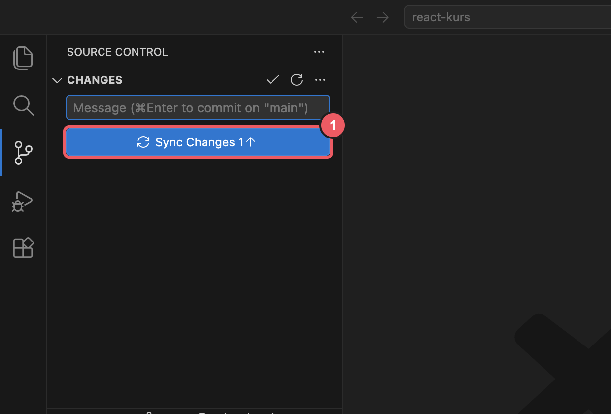
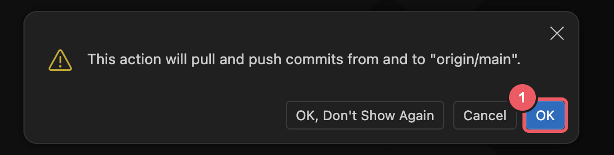
Шаг 6. Проверить, что GitHub принял работу
После каждой отправки GitHub сам проверяет репозиторий: нет ли в коммите секретов и собирается ли каждая папка с package.json. Это делает файл .github/workflows/check-work.yml. Откройте свой репозиторий → вкладка Actions → верхний запуск Проверка работ. Через полминуты у него появится значок.
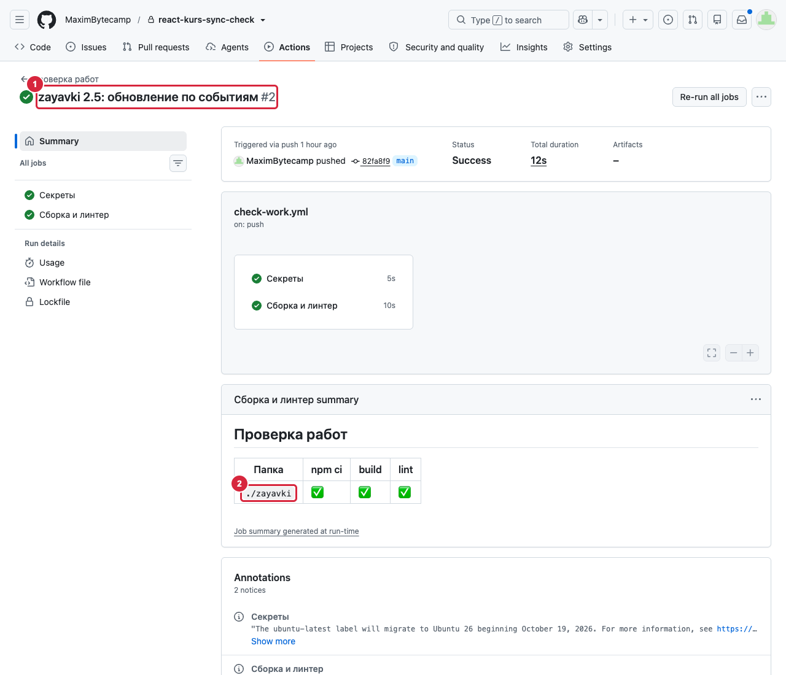
Красный крестик значит, что одна из проверок не прошла. Текст ошибки — внизу запуска, в блоке Annotations.
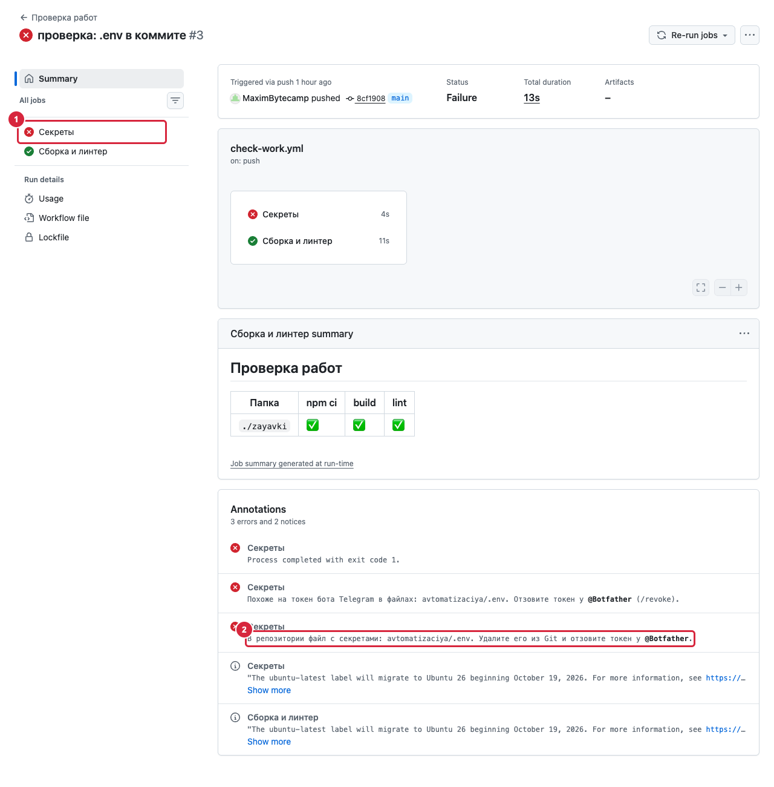
.env. 1 — задание Секреты с красным крестиком; 2 — ошибка: в репозитории файл с секретами.| Какое задание красное | Что случилось | Что делать |
|---|---|---|
| Секреты | в коммит попал файл .env или строка, похожая на токен бота | сразу отозвать токен у @BotFather командой /revoke и выпустить новый; файл удалить из репозитория. Удаление не стирает токен из истории, поэтому отзыв обязателен |
| Сборка и линтер, столбец npm ci | нет файла package-lock.json или он не совпадает с package.json | в папке работы выполнить npm install и отправить оба файла |
| Сборка и линтер, столбец build или lint | ошибка типов или замечание линтера | выполнить шаг 3 у себя, исправить, отправить снова |
Что получилось.На странице репозитория на GitHub над списком файлов — ваше сообщение коммита и ваш логин, на вкладке Actions у проверки зелёная галочка.
Если VS Code под рукой нет, небольшие файлы можно сдать через сайт GitHub.
§9Сдать работу через сайт GitHub
Сайт подходит для небольших файлов, когда VS Code под рукой нет: журнал ai-log.md, README.md проекта, выгруженные процессы n8n. Код проекта через сайт не загружают: в нём десятки файлов, а package-lock.json должен совпасть с package.json. Пустые папки GitHub не хранит, поэтому новая папка создаётся вместе с первым файлом.
Шаг 1. Создать файл
Откройте свой репозиторий → папку projects. Нажмите Add file → Create new file.
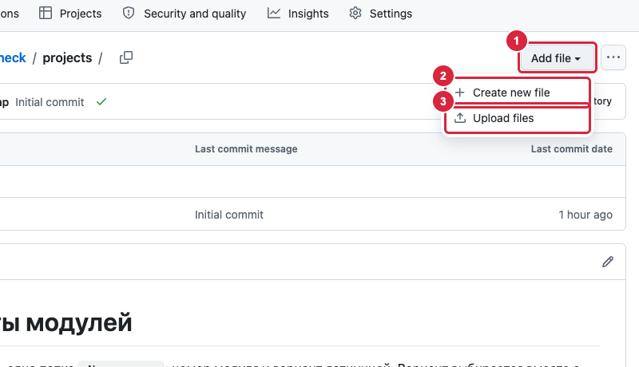
В поле имени наберите p1-obshchezhitie/ai-log.md. Знак / делает p1-obshchezhitie папкой: имя переезжает в строку пути. Если папка проекта уже есть, откройте её и наберите только ai-log.md. В тексте файла напишите журнал по образцу со страницы проекта.
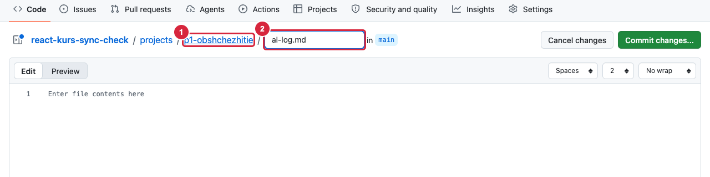
p1-obshchezhitie в строке пути; 2 — поле имени файла ai-log.md.Шаг 2. Сохранить файл коммитом
Нажмите Commit changes…. В сообщении напишите p1 obshchezhitie: журнал работы с ИИ. Оставьте пункт Commit directly to the main branch и нажмите Commit changes.
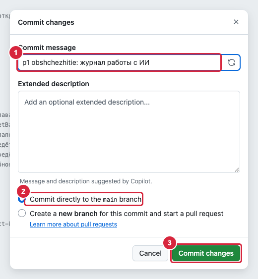
| Пункт в окне коммита | Что произойдёт |
|---|---|
| Commit directly to the main branch | выбирать этот пункт: файлы попадут в main, работа сдана |
| Create a new branch for this commit | файлы уйдут в отдельную ветку и в main не появятся |
Шаг 3. Загрузить готовые файлы
Так загружаются процессы n8n проекта 2, выгруженные кнопкой Export JSON. Откройте папку проекта, нажмите Add file → Upload files и перетащите файлы ii-dispetcher.json и knopka-vzyat.json. Внизу напишите сообщение p2 obshchezhitie: процессы n8n и нажмите Commit changes.
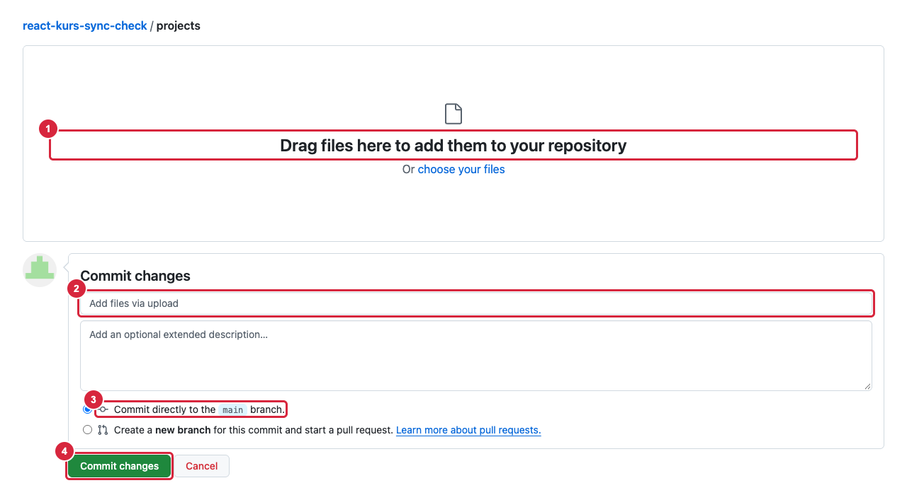
Исправить файл на сайте: откройте его → карандаш ✎ → правка → Commit changes… → сообщение p1 obshchezhitie: исправлен журнал.
Что получилось.Работа лежит в main. Если вы работаете ещё и в VS Code, перед следующей работой нажмите в нём Sync Changes, чтобы забрать загруженное через сайт.
Работы уходят на GitHub. Преподаватель в это время добавляет в шаблон конспекты глав и задания проектов, и они тоже должны попасть в ваш репозиторий.
§10Новые материалы от преподавателя
Перенос материалов похож на папку с работами, в которую преподаватель раз в день подкладывает новые бланки. Свои бланки он заменяет свежими, а ваши листы оставляет как есть. Создавать репозиторий заново не нужно.
В репозитории лежит файл .github/workflows/update-materials.yml. Это задание для GitHub Actions — службы GitHub, которая запускает программы по расписанию. Каждый день в 06:00 по Москве она сравнивает ваш репозиторий с шаблоном и переносит новое. В истории это коммит materials: обновление из шаблона курса от github-actions[bot].
Какие файлы меняются при переносе:
Ведёт преподаватель · заменяется
lectures/— конспекты главmaterials/— файлы с занятийdocs/— правила сдачиprojects/README.md— таблица выданных проектов- новые файлы шаблона — добавляются, если их у вас нет
Ведёте вы · не меняется
- доска
zayavki/и папкаavtomatizaciya/ - ваши проекты в
projects/pN-вариант/ README.mdв корне — визитка- файлы, которые вы добавили сами
Из этого следует правило: свои правки пишите в файлах правой колонки. Файлы левой колонки при каждом переносе заменяются версией преподавателя.
Шаг 1. Забрать обновление сразу
Этот шаг нужен, когда проект выдан на паре и ждать утра нельзя. Откройте свой репозиторий → вкладка Actions → слева Обновление материалов курса → справа кнопка Run workflow.
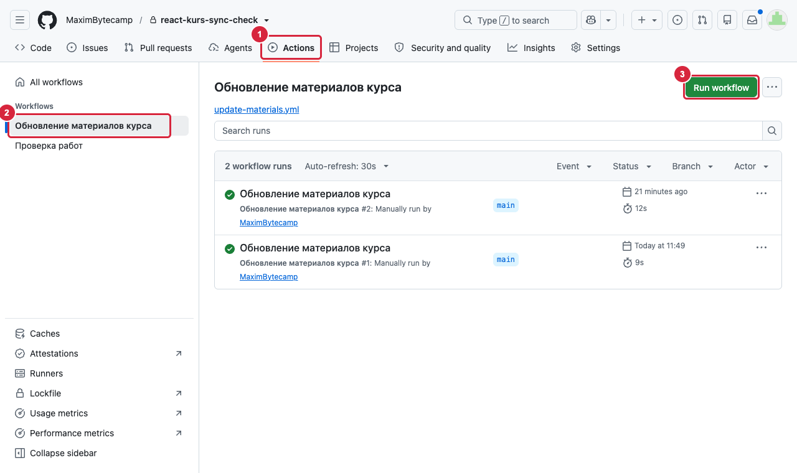
Справа откроется панель. Оставьте ветку main и нажмите зелёную Run workflow внизу панели. Через полминуты в списке появится запуск.
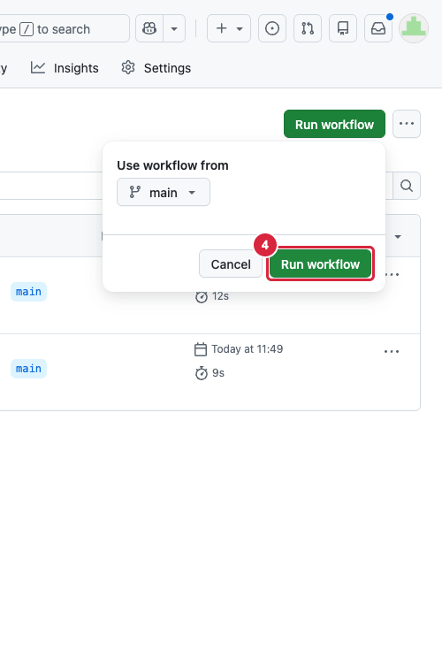
| Значок запуска в Actions | Что означает |
|---|---|
| зелёная галочка | перенос прошёл; внутри запуска перечислены добавленные и обновлённые файлы |
красный крестик, текст шаблон не найден | репозиторий создан форком или вручную; создайте его заново по §3 и перенесите файлы |
Откройте запуск: внизу страницы, в блоке update summary, перечислены перенесённые файлы.
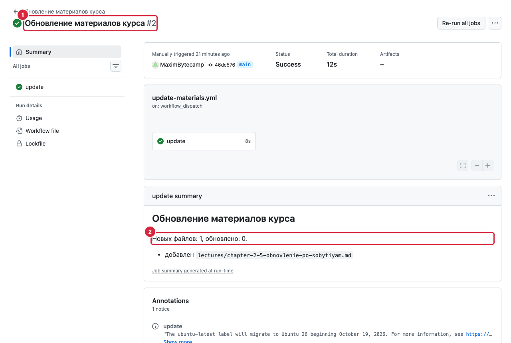
Шаг 2. Забрать на компьютер
В VS Code откройте панель Source Control и нажмите Sync Changes. На кадре в графе виден входящий коммит materials: обновление из шаблона курса: это перенос, который сделал GitHub.
После нажатия новые файлы появятся в проводнике.
Что получилось.Новые материалы есть и на GitHub, и в папке на компьютере.
Остаётся последний сценарий — уйти с компьютера колледжа так, чтобы следующий студент не получил доступ к вашему GitHub.
§11Конец пары за компьютером колледжа
Шаги обратные §5: каждый вход, который вы сделали, нужно закрыть.
Что закрыть перед уходом
Проверка перед уходом
Документы/react-kurs.Что получилось.Ваш вход и ваши файлы с компьютера удалены. Работы хранятся на GitHub, на следующей паре вы склонируете их заново.
Сценарии разобраны. Дальше — ошибки, которые встречаются чаще других, и как их исправить.
§12Где можно ошибиться
Полный текст ошибки VS Code показывает по кнопке Show Command Output или Open Git Log. Ниже ошибки собраны по тексту, который выводит Git.
Не заданы имя и почта

Выполните команды шага 5 §5 (дома — шага 2 §6) и снова нажмите Commit.
Отправка от чужого имени
remote: Permission to ivan-petrov/react-kurs.git denied to anna-smirnova. fatal: unable to access 'https://github.com/ivan-petrov/react-kurs.git/': The requested URL returned error: 403
Git отправил файлы по сохранённому входу прошлого студента. Удалите запись по шагу 3 §5 и снова нажмите Sync Changes. В открывшемся окне войдите в свой аккаунт.
GitHub скрывает почту
remote: error: GH007: Your push would publish a private email address.
В настройке Git стоит настоящая почта, а на странице Settings → Emails включён пункт Block command line pushes that expose my email. Укажите служебную почту и переподпишите последний коммит:
git config user.email "12345678+ivan-petrov@users.noreply.github.com" git commit --amend --reset-author --no-edit
Затем нажмите Sync Changes.
Разошедшиеся ветки
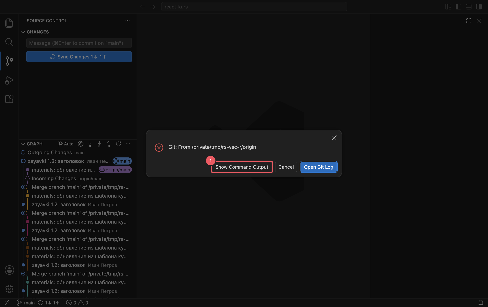
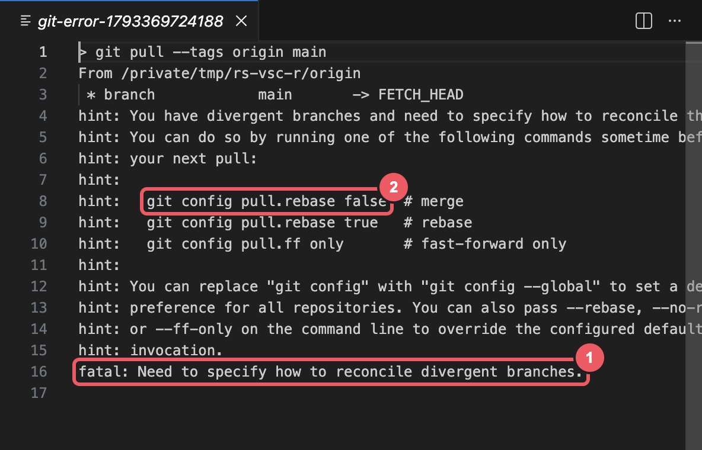
git config pull.rebase false.Новые коммиты на GitHub появляются после переноса материалов или правки через сайт. Выполните в терминале команду из строки 2 — git config pull.rebase false — и снова нажмите Sync Changes.
Push отклонён
Can't push refs to remote. Try running "Pull" first to integrate your changes.
Кнопка Push только отправляет коммиты. Если на GitHub есть новые коммиты, отправка отклоняется. Нажмите Sync Changes: эта кнопка сначала забирает новое, потом отправляет ваше.
Конфликт в файле
<<<<<<< HEAD (Current Change)
<p>ИТ-отдел колледжа · заявки студентов, преподавателей и гостей</p>
=======
<p>ИТ-отдел колледжа · заявки студентов и сотрудников</p>
>>>>>>> fa61b02742035cdf7e61854443f77b6c59d1c5ad (Incoming Change)
Один файл изменён и на сайте, и на компьютере. Между <<<<<<< HEAD и ======= — версия с компьютера, ниже — версия с GitHub, после >>>>>>> — номер коммита с GitHub. Над блоком VS Code показывает кнопки:
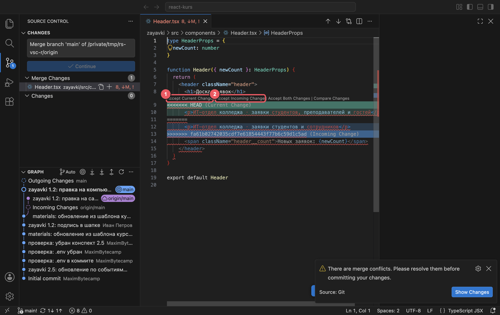
Выберите нужную версию и сохраните файл: CtrlCmd + S. Файл останется в разделе Merge Changes. Нажмите + справа от его имени, затем Continue и Sync Changes.
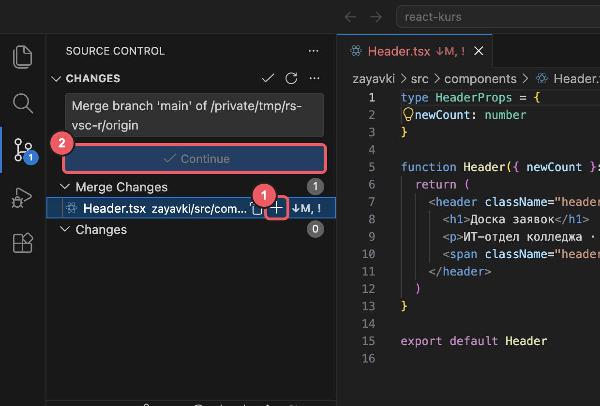
Другие ошибки
| Что видно | Причина | Что делать |
|---|---|---|
Repository not found при клонировании | VS Code вошёл в другой аккаунт | шаги 1–2 §5, затем клонировать снова |
внизу слева не main | выбрана другая ветка | нажать на имя ветки → выбрать main; если в другой ветке уже есть коммиты, написать преподавателю |
| файл в другой папке или с другим именем | ошибка при создании | в проводнике перетащить файл или F2; коммит p1 obshchezhitie: файлы переименованы |
| коммиты с серым значком, в графике профиля их нет | почта коммитов не привязана к аккаунту | указать служебную почту из §2; новые коммиты свяжутся с профилем |
Кроме ошибок, на парах повторяются одни и те же вопросы. Ответы на них собраны ниже.
§13Частые вопросы
§14Шпаргалка
github.com/signup
Settings → Emails → Keep private
Use this template → react-kurs
браузер: свой аккаунт
VS Code: Sign Out чужого
удалить вход github из хранилища
Clone from GitHub → Документы
git config user.name "Имя Фамилия"
git config user.email "…@users.noreply.github.com"
git config pull.rebase false
Sync → работа → build и lint → Commit → Sync
zayavki 1.5: список, ключи, фильтр
Actions → Проверка работ: галочка
zayavki/src/App.tsx
projects/p1-obshchezhitie/ai-log.md
avtomatizaciya/compose.yaml
Sync: счётчика ↑ нет
Sign Out в VS Code и браузере
удалить вход github и папку
Итог
Репозиторий для работ создаётся один раз кнопкой Use this template и подписывается в README. В начале пары в колледже проверяются четыре места, где остаётся чужой вход. Затем репозиторий клонируется, а имя и почта задаются для папки проекта. Доска по главам растёт в папке zayavki, проект модуля начинается с её копии в projects. Перед коммитом работа проверяется командами npm run build и npm run lint, затем отправляется кнопкой Sync Changes, и GitHub Actions повторяет проверку и ищет секреты. Новые материалы переносятся каждый день по расписанию, на компьютер их забирает Sync Changes. В конце пары закрываются все входы и удаляется папка.
- Перенос материалов и проверка работ проверены 30.10.2026 на закрытом репозитории, созданном из react-kurs-template: зелёная сборка доски, красный крестик на коммите с
.env, возврат удалённого конспекта. - Учёт коммитов в графике активности — документация GitHub.
- Уровни настроек Git и подпись коммитов — глава 1.4 справочника по Git, клонирование — глава 2.2.
- Почему структура и имена такие — стандарт репозитория студента.